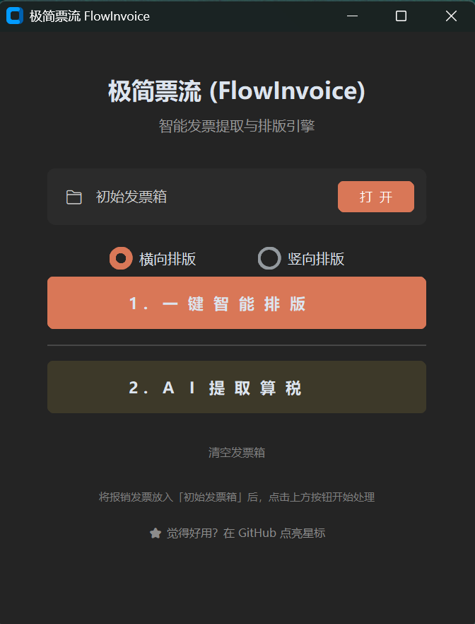
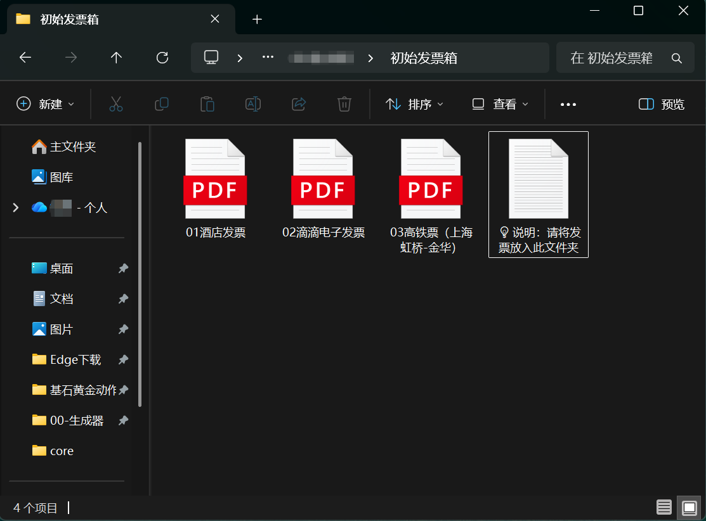
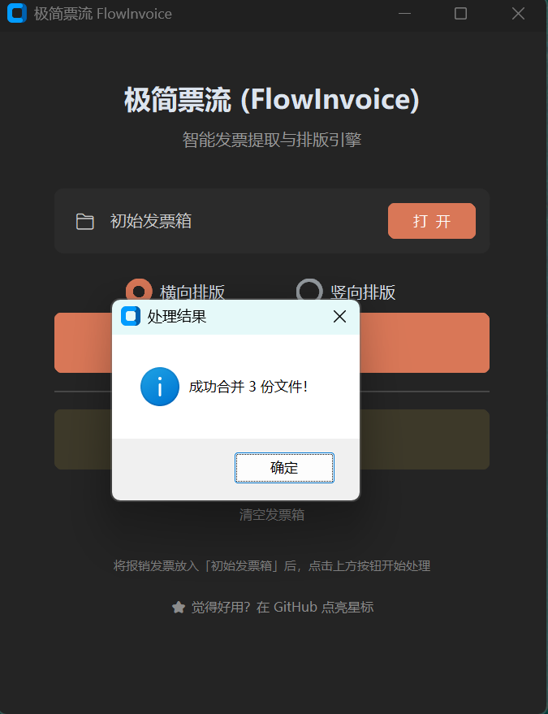
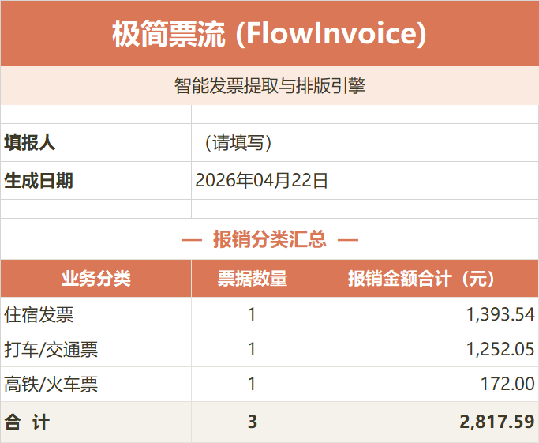
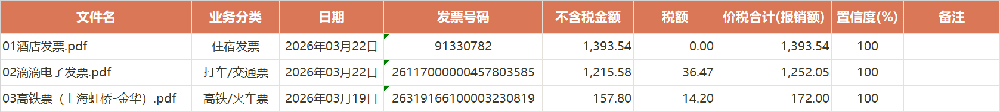
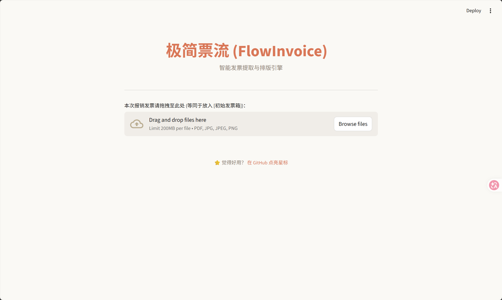
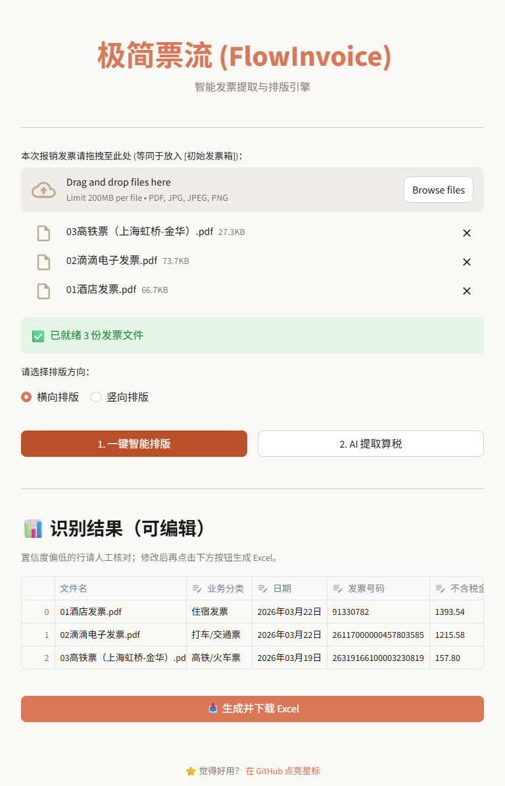

本手册面向完全不懂技术的读者。照做每一步，5 分钟内你就能完成第一次发票整理。
极简票流 解决两件烦人的事：
所有处理在你自己电脑上完成，不会上传到任何云服务器，发票隐私 0 泄露。
AssetsFlowInvoice.exe 下载（约 180 MB）💡 首次打开较慢：Windows 需要 3-8 秒解压程序，属正常现象，别以为死机了。
git clone https://github.com/VicLuoV5/FlowInvoice.git
cd FlowInvoice
pip install -r requirements.txt
python app.py # 启动桌面端
streamlit run web_app.py # 启动网页端
典型情境：你上周出差 3 天，攒了机票 / 高铁票 / 打车票 / 酒店票 / 吃饭发票，现在要合并打印 + 填报销明细表交财务。
双击 FlowInvoice.exe，出现这个主界面：

初始发票箱 文件夹
💡 如何控制发票顺序？ 把文件名前面加上编号。比如
01_机票.pdf、02_高铁票.pdf、03_酒店.pdf，程序会按这个编号顺序合并。
⏳ 排版 3/10 文件名
00-生成器 文件夹里找到 合并后_报销单(横向).pdf — 这就是你要打印的报销单，所有发票已居中排版好⏳ 识别 3/10 文件名，OCR 引擎正在读取每张发票00-生成器 文件夹里找到 发票报销明细汇总.xlsx — 这就是你要交给财务的明细表合并后_报销单(横向).pdf → 粘贴纸质发票时的顺序依据发票报销明细汇总.xlsx 发给财务 → 含封面汇总 + 每张票详细明细典型情境：你是自由职业者 / 个体户 / 小微企业主，每月要汇总所有发票做账。
流程和场景 A 一样，但有几个月度使用的技巧：
20260301_滴滴.pdf
20260303_高铁上海虹桥-金华.pdf
20260305_酒店维也纳.pdf
20260308_午餐.jpg
这样文件名自动按日期排序，合并后的 PDF 顺序 = 时间顺序，一眼能对账。
生成的 Excel 第一页是按类型汇总的表格：

打印这一页 → 你和会计的交接单（总金额一目了然）。
打开 Excel 第二页 报销明细，看带颜色的行：
- 🟥 红色行 = 置信度 < 50%，OCR 可能识别错了，建议立即人工看原票核对
- 🟨 黄色行 = 置信度 50-79%，建议抽查一下金额
- ⬜ 白色行 = 高置信度，正常不用管
典型情境：财务系统会自动导入发票数据，你只需要一张打印稿做凭证附件。
更简单，只用 3 步：
初始发票箱完全不用点「2. AI 提取算税」。
这一页告诉你：
- 填报人（显示"请填写" → 你自己手动填上名字）
- 生成日期（自动填今天）
- 按类型汇总的金额：机票 X 元、高铁 X 元、打车 X 元...
- 合计行：所有发票总数 + 总金额

每一行一张发票，9 列信息：
| 列 | 含义 |
|---|---|
| 文件名 | 对应"初始发票箱"里的原始文件 |
| 业务分类 | 机票/高铁/打车/加油/通讯/餐饮/住宿/增值税 |
| 日期 | 发票开具日 |
| 发票号码 | 8-24 位数字 |
| 不含税金额 | 价税分离后的净额 |
| 税额 | 可抵扣税额（餐饮为 0） |
| 价税合计(报销额) | 你实际报销的金额 |
| 置信度(%) | OCR 识别把握，越高越可信 |
| 备注 | ⚠️ 疑似重复、餐饮税额不可抵扣 等提示 |
桌面端适合快速批处理，网页端适合精细编辑。
.exe 只能在 Windows 用）在命令行（或开发环境）：
streamlit run web_app.py
浏览器会自动弹出：


在这个表格里你可以：
- 直接改单元格的值（比如 OCR 把金额看错了，点击直接改）
- 用下拉菜单改业务分类
- 看到 ⚠️ N 个文件未能识别 的折叠面板时，点开看哪些文件失败了，可以对照原票手动补录
- 确认数据都对了，点底部 「📥 生成并下载 Excel」 得到最终报告
可能原因：
- 图片太模糊（手机拍照晃了）→ 重拍一张清晰的
- 不属于程序支持的类型 → 目前支持：机票、高铁、打车、加油、通讯、餐饮、住宿、增值税，其他类型会进入失败列表
处理：用网页端的可编辑表格手动补录一行。
这是 OCR 的正常误差。
- 红色 / 黄色行 就是程序告诉你"这行我拿不准"
- 去网页端打开可编辑表格，直接改单元格的数字，再生成 Excel
按国税规定，餐饮服务增值税不可抵扣进项。程序遵守这个规则，把价税合计原样作为报销额，税额填 0。备注列会有文字提示。
你的 Excel 文件还在 Office 里开着，占用了文件锁。关掉 Excel 后再点生成按钮即可。
不会。 一切处理都在你本机上：
- OCR 引擎（RapidOCR）用的是本地 ONNX 模型
- PDF 解析用的是本地 PyMuPDF
- Excel 生成用的是本地 pandas
- 没有任何一步访问互联网
你可以断网运行这个程序，完全正常。
测试过 50 张不卡顿。再多理论上也没问题，只是等得久一些（OCR 每张约 2-5 秒）。
.exe：去 Releases 页面下载新版本替换旧的即可git pull 然后 pip install -r requirements.txt去 https://github.com/VicLuoV5/FlowInvoice/issues 提一个 Issue，描述清楚就行。
极简票流 FlowInvoice · 纯本地离线 · MIT License
极简票流 FlowInvoice · 纯本地离线 · MIT License
https://github.com/VicLuoV5/FlowInvoice